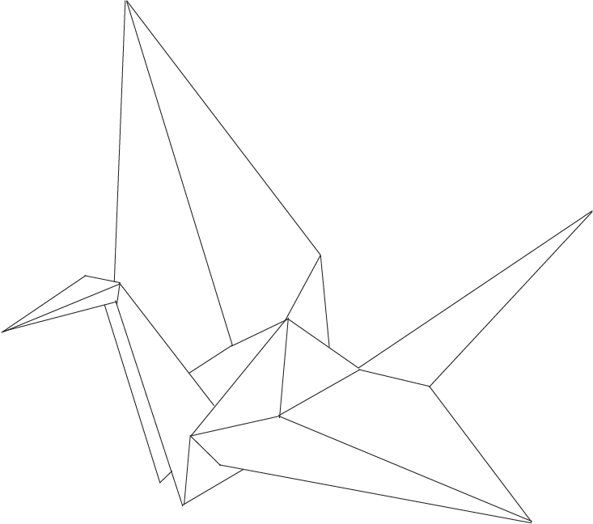

The paper crane
The orizuru (ori- “folded,” tsuru- “crane”), or paper crane, is a design that is considered to be the most classic of all Japanese origami. The crane is a traditional origami
figure, auspicious in Japanese culture.
Legend says that anyone who folds one thousand paper cranes
will have their heart’s desire come true.
"Wings carry up soul to paradise."
- A thousand orizuru strung together is called senbazuru.
- 100 origami cranes is 40 minutes 35 seconds, achieved by Yoneyama Yuichi (Japan) in Nagoya, Japan, on 30 November 2010. That’s an average of 24.35 seconds for each crane!
- The largest origami crane was created by the Peace Piece Project at Hiroshima Shudo University, Hiroshima, Japan, on 29 August 2009 with a wingspan of 81.94 m (268 ft 9 in).